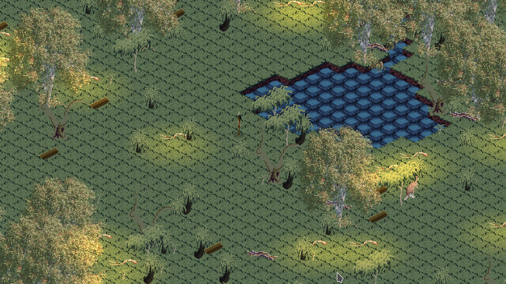
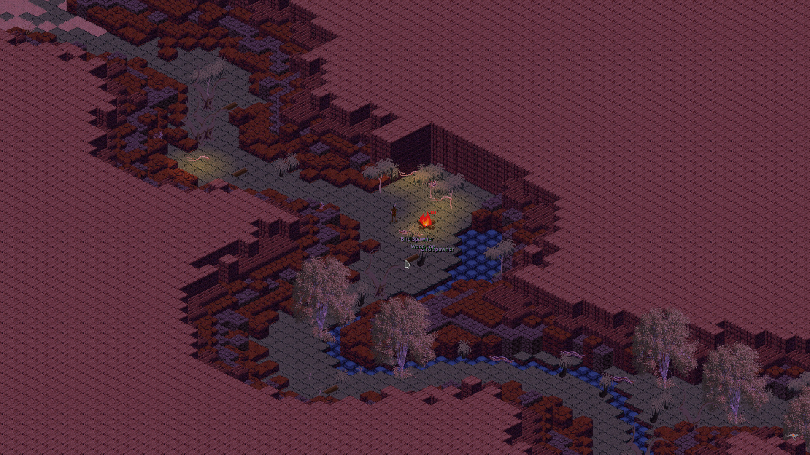
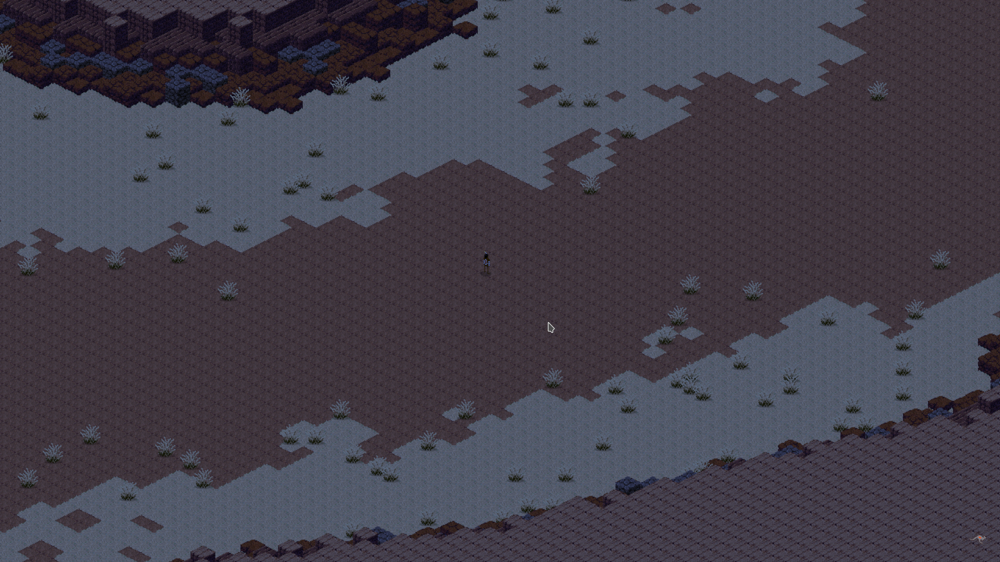

Uthuru II
Look, listen, learn. Survival will depend on a deep understanding of the land and indigenous technologies.

Concept
Uthuru is an minimalistic indigenous Australian themed survival prototype with a focus on aboriginal culture and technology, as well as the importance of water and fire. Any release of this concept will be developed with indigenous artists and writers.
Uthuru II is designed to be a learning tool for primary school aged children to teach them about indigenous culture and survival techniques, as well as Queensland flora and fauna.
The player progresses by obtaining and or crafting tools and resources, as well as finding cultural sites that tell a Queensland Aboriginal story. A major goal of the player is to craft a water bottle in order to travel further, though doing so will require a lot of knowledge, preparation and hard work.

The World
The game is set in a fictional slice of South Queensland, ranging from from the desert to the sea.
In this large landscape most resources are rare, but locally abundant. This makes transporting and organising resources a priority.
Temperature fluctuates between day and night making traveling during the day very difficult due to water loss.
Moisture levels vary throughout the land making some areas and resources difficult to obtain. The player must constantly manage their hydration levels by visiting water holes.
Sites of cultural significance can be found by the player, often near waterholes, that tell stories that not only educate the player in aboriginal culture and customs, but also inform gameplay in world.

MECHANICS
All vegetation has a lifecycle. Trees die and turn to bracken. Bracken rots into soil. New saplings sprout in the fertile soil and the process starts again.
The player may influence or interupt this cycle by using tools to chop down trees, moving and piling up bracken, as well as by lighting fires.
Over time, in moist regions, forests will slowly turn to grasslands. The player can start fires that spread through grass and other combustible materials. The ashes left behind are particularly fertile ultimately helping to seed a new forest in time.
Shelter can be built from bark and used to rest, replenishing stamina. The player will be forced to move on regularly (burning as much as they can before they go) as an area has the resources to support them for a short while and will only replenish once the ashes settle and the forest regenerates.

TECHNOLOGY
Uthuru II has a data-driven, scriptable architecture that allows designers and players to modify and augment the game without having to recompile it.
All objects in game, including vegetation, resources, tools and animals are all defined in .json files and their logic defined in LUA scripts. This means anyone who can play the game, can also read and edit the games objects and immediately see those changes when starting the game.
The goal is to facilitate a way for students to add plants, animals, tools, or any other items into the game as they learn about them in their curriculum. The API the game provides has been designed to work well as an entry point for learning programming and game design.